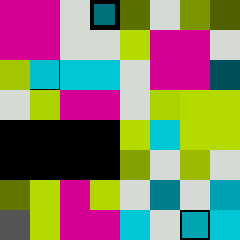

Expectation Reality
Generative percussion for the M-VAVE FM-1. Press REC and it writes a groove: four parts (KICK, SNARE, PERC, HATS), each a pattern on its own length driving a synthesised drum engine. Expectation is the groove it deals, a loop that plays the same every time. Turn up EVOLVE and it turns into reality: to halfway the groove bends into weirder loops, past it it flows freely and rewrites itself. Made to play under After Images.

Version 1.1 · Install it · User guide · Play it in your browser · Source
What it does
- One button, a whole groove: four sounds (one carried over, for a set that flows), four patterns, effects, a palette and a name; the tempo stays yours.
- Polymeters: the kick and snare hold the bar while the perc and hats loop on odd lengths, drifting against it.
- Generators, not dice: a groove map, Euclidean rhythms, Turing machines and broken IDM groupings; or other personalities: FLOORS' four on the floor, CLOUDS' soft micro-sounds, IMPLODE's dusty boom-bap.
- Step components: ratchets, nudges, conditions, probabilities and ghosts, brought in by EVOLVE one at a time.
- Thirty-eight drum engines: a soft 808, struck skins, resonant boxes, FM, a struck filter, a wavefolder, worn tape, felt thumps and rumbles; claps, wires, grains, cracks, a circuit-bent toy, rims, snaps, brushes, a drum machine's snare and a spring; wood and glass, strings, foley, wood blocks and slit drums, tabla, hand drums, tines and bottles; metal clusters, crackle, digital noise, an almost-vocal hat, impulse clicks, shakers, FM hats, breath, 8-bit noise and crinkled foil. WEIGHT sets the fullness, ENTROPY the attack, MOOD heavy and long to bright and short.
- Punch-ins on the keys: filters, kill kick, a fill key, glitch, repeats held to the grid, pitch up and down, tape mash, reverse (the whole kit or one part), freeze, swell, crush; on the beat, with a beat light to time them by; tape mash, crush and reverse tuned on their own page.
- Randomisers on the black keys: every hit of a part thrown somewhere new while you hold one.
- A kit bus: a kick-sidechained tape compressor, a room that gates, reverses and freezes, a glitch delay, pans.
- A partner to After Images: follows its clock to the beat and bar and listens to its notes.
Quick start
- Open the installer in Chrome or Edge on a computer, plug in the FM-1 by USB and follow the page.
- It starts playing. K1 to K4 set KICK, SNARE, PERC and HATS.
- REC for a new groove at the end of the loop; held, a new groove in the same key.
- Hold HOME and turn K1 to K4 for the macros: MOOD, ACTIVITY, EVOLVE and DRIFT.
- Hold a white key for a punch-in; a black key for a randomiser.
- SAVE keeps a groove; ALGORITHM steps through your saved ones.
- Stop with PLAY before switching off: a few seconds later it keeps your settings.